不改变高考主线,在国家课程之上叠加能力提升模块与中本贯通升学通道,为学校提供低风险、可复制、可推广的教育创新方案。
政策背景:《教育强国建设规划纲要(2024—2035)》明确提出以教育数字化开辟新赛道;2025 年九部门印发《关于加快推进教育数字化的意见》,全面推进智能化。
区域竞争加剧、家长期望从「升学率」扩展到「综合素质」,学校亟需一种低风险、可持续、可复制的教育创新模式。
MFA = Meridian Future Academy — 一套获 Cognia 国际认证的中本贯通项目。在体制内课程之上,以「增量」方式叠加能力提升模块,不改变高考体系。
SFEG 总部位于新加坡，业务覆盖 K-12 教育、国际课程平台与高等教育机构，形成横跨新加坡、马来西亚、中国与美国的多节点教育网络。
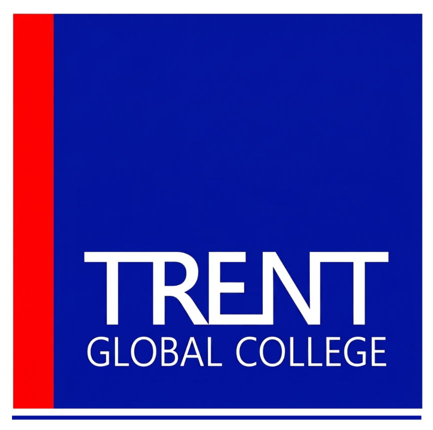
SFEG 规划在新加坡 Phoenix Park 校区承接爱丁堡大学相关合作项目，定位为集团在新加坡高等教育版图中的旗舰型国际校区。
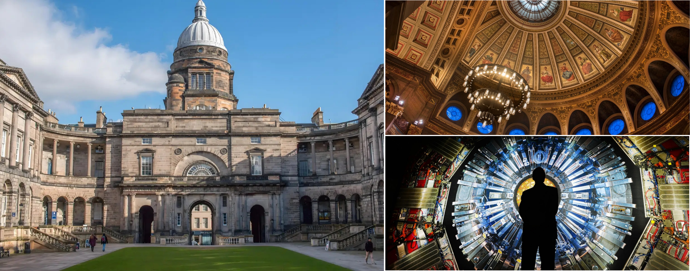
围绕曼彻斯特大学的全球声誉与 NKL 在吉隆坡的本地办学能力，项目定位为 SFEG 在马来西亚的合作办学与国际学生服务平台。
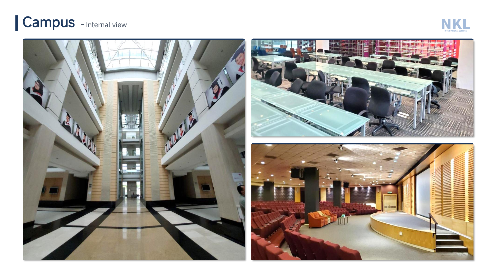
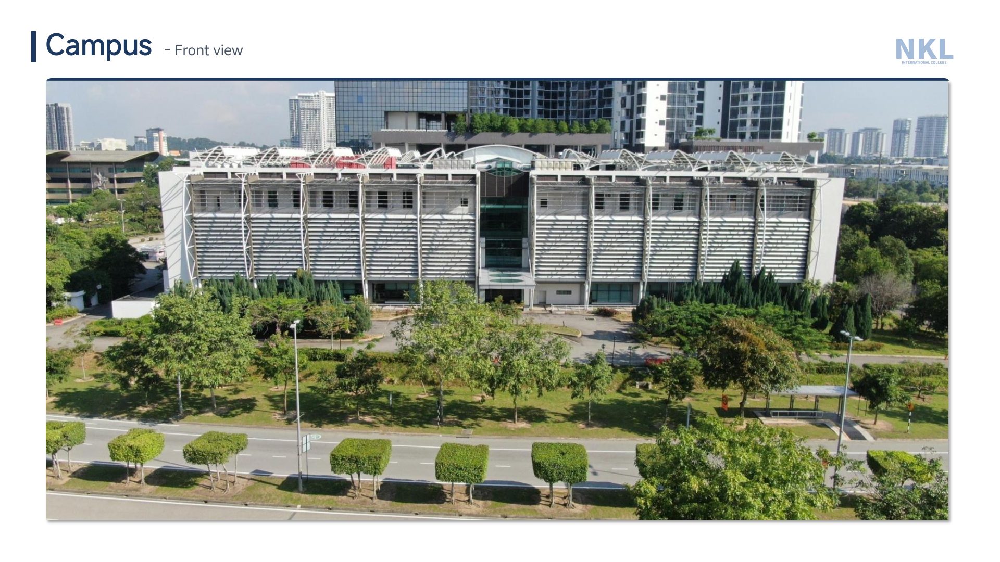
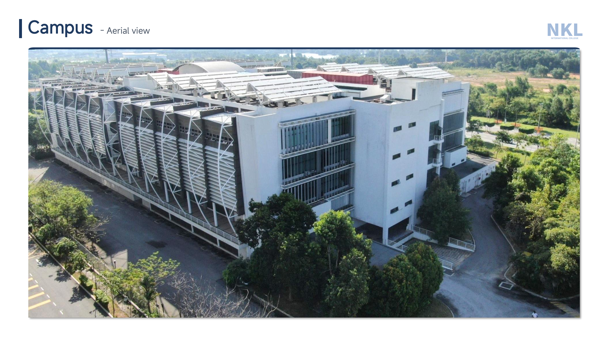
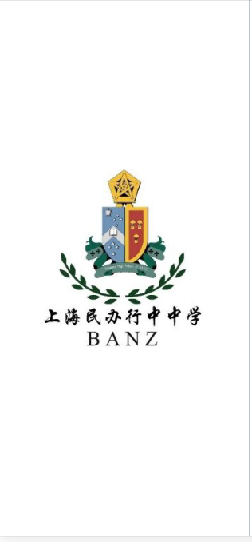
上海预科中心以天华英澳美 BANZ 体系为基础，作为 NCUK 授权学习中心，开设 IFY 预科与 IYOne 国际大一，构成集团在中国端的国际衔接教育中心。
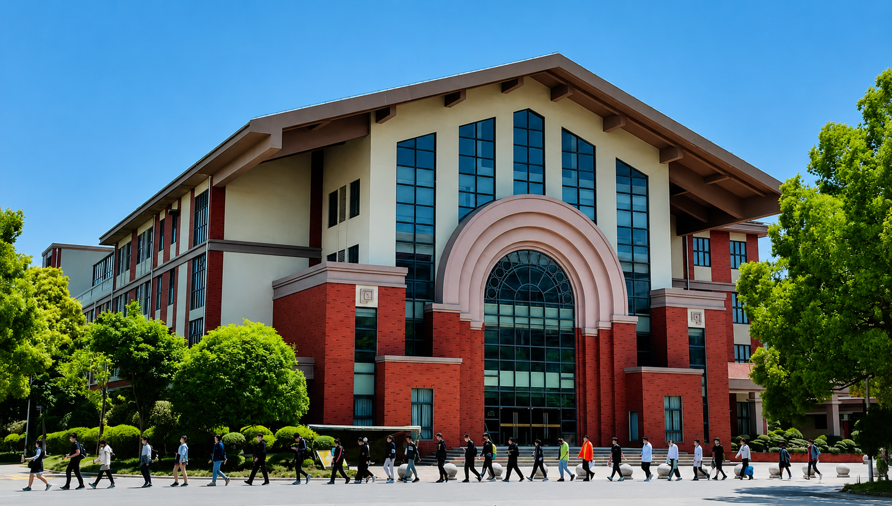
在 AI 时代,教育的真正价值不在于学生记住多少知识,而在于能否运用知识解决复杂问题、独立思考、持续学习,在全球化环境中沟通与协作。
围绕 AI 技术搭建的全方位在线学习生态系统。整合全球顶尖教育科技工具,构建智能化、数字化、自主化的学习生态。
每一次上课都是一次完整的「讲解 · 互动 · 反馈 · 沉淀」闭环。AI 助教全程陪伴,数据可视、路径自适应。
高考主线不动。MFA 学分通过课时折算 + 增量模块叠加而成 — 学生几乎无需额外占用高考备考时间。
采用美式 过程性 GPA 评估 — 只要稳定参与日常学习,毕业 GPA 几乎稳过申请门槛;高三以 PBL 毕业项目收尾,沉淀为一份个人作品集。
PBL 项目式学习 — 真实场景、跨学科整合,沉淀为个人作品集。部分工作可在高考后完成。
双毕业证 + 留服中心认证 — 学生毕业后获得海外大学学位证书及中国教育部留学服务中心认证,学历受国家认可。100% 学历认证率,全球认可度高。
总学分 21 分 = 校内课程 ≈15 学分(70%) + 校外课程 ≈6 学分(30%)。校外模块不替代、不削减任何原有课程。
📅 增量课程主要安排在周末与寒暑假 · 一周一次课即可完成全部学分,不与高考主课争抢学习时间。
学生始终保留高考主线。通过 MFA 的国际升学通道,学生有更多机会进入与中国 C9 联盟同档(以 QS 世界排名为参照)甚至更高的世界名校。
从美国常春藤到英伦名校,从狮城到香江,学生在 MFA 体系下保留高考主线,同时获得面向全球高校的申请视野。当地球旋转时,不同区域的院校 Logo 会像升学窗口一样依次被点亮。
为三年高中生涯提供一份保障。AP 成绩可转换为海外大学学分,缩短本科学习时间、节省学费,同时是海外名校录取的重要参考指标,显著提升申请成功率。
中国(尤其北上广深)放宽留学生落户政策,引进优秀海归人才。MFA 为学生提供更多选择,意味着更多可能。
从美国 Cognia 国际学校认证到中国教育部留学服务中心,从新加坡 EduTrust 到私立教育注册 — MFA 体系的每一步都建立在权威背书之上。
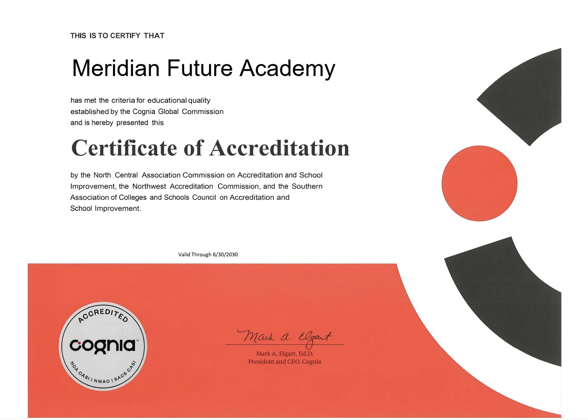
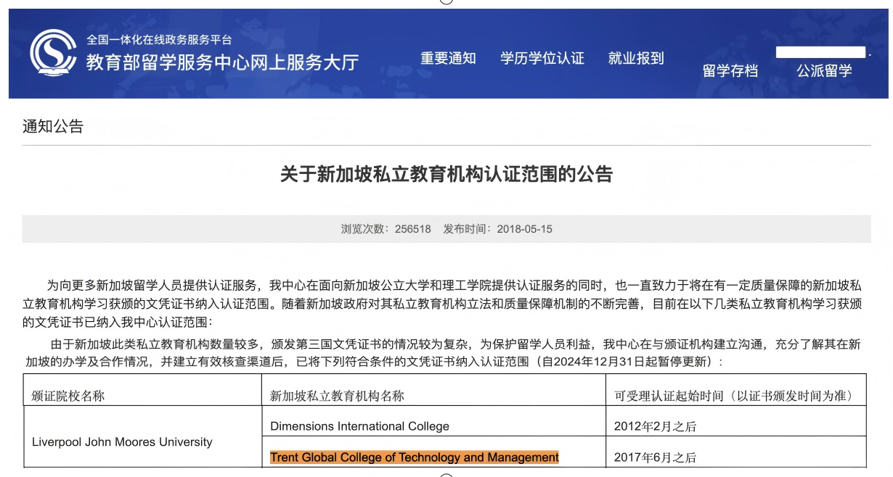
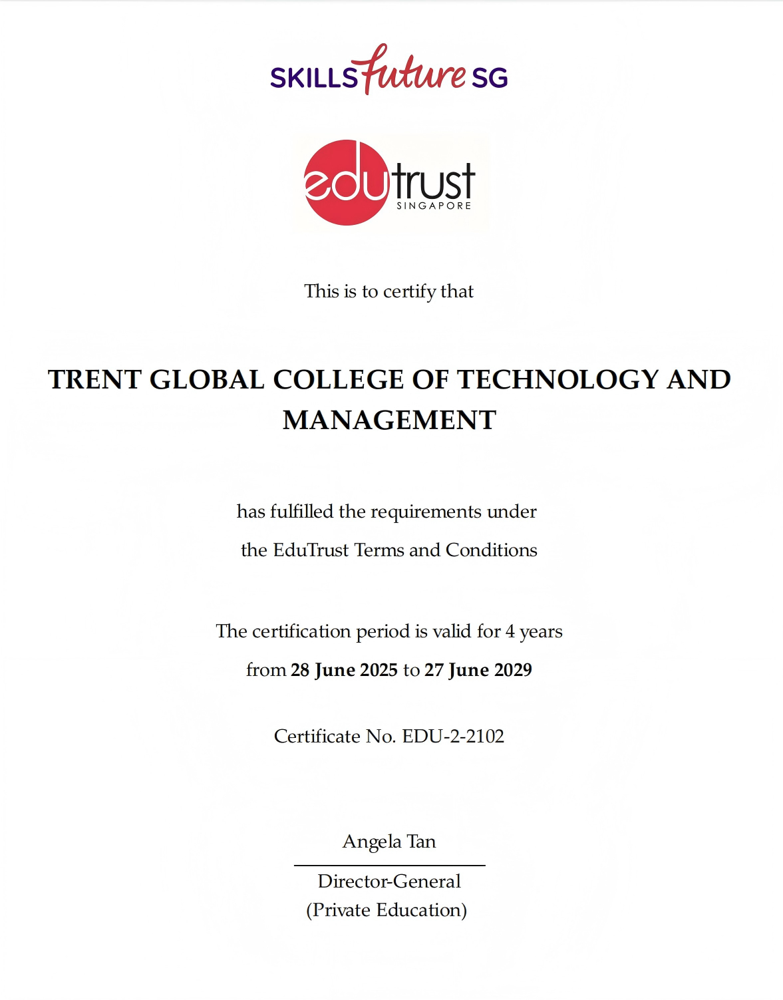
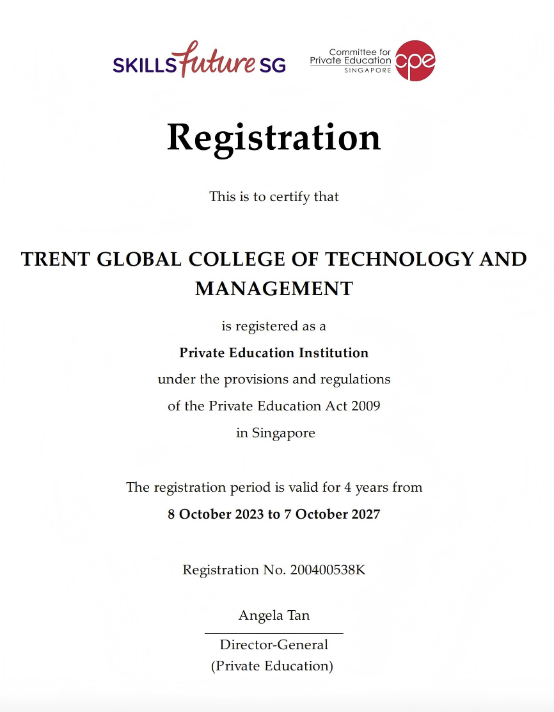
在教育强国战略与教育现代化进程不断推进的背景下,MFA 项目以「稳主线、强能力、拓路径」为核心理念,在不改变高考体系的前提下,形成可复制、可推广的教育创新模式。
高考体系不受影响
综合素养全面提升
多元升学选择